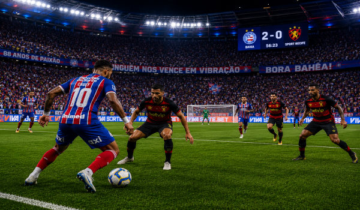

O QUE É O DRAFT?

HISTÓRIA
Criado pela National Football League (NFL) em 1936, o Draft surgiu com o objetivo de tornar as competições mais equilibradas, permitindo que as equipes com pior desempenho tivessem prioridade na escolha de novos talentos. Com o passar dos anos, o modelo foi adotado por diversas ligas esportivas dos Estados Unidos, incluindo a National Basketball Association (NBA), tornando-se uma das principais ferramentas para renovação de elencos e manutenção da competitividade entre as franquias.
A BATALHA COMEÇA AQUI
Toda dinastia tem um começo. Toda conquista nasce de uma escolha. No Draft, capitães analisam talentos, traçam estratégias e montam equipes capazes de enfrentar qualquer desafio. Cada seleção pode revelar uma estrela, fortalecer um elenco ou mudar completamente o destino de uma temporada. É aqui que os sonhos ganham forma e a corrida pelo título tem início. ⚽🏆🔥
Edições
8
Participantes
8
Total de gols
7.525